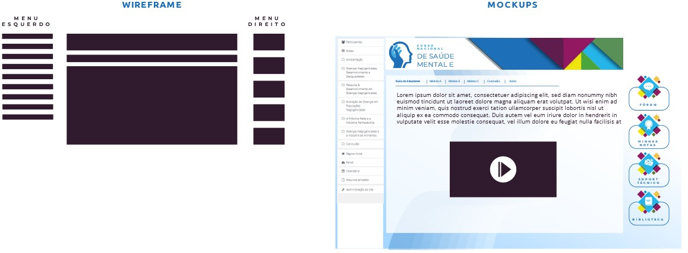

<div>
    <div style="display: flex;justify-content: space-between;/* align-items: center; */">
        
        
    </div>
    <div class="animate__animated animate__backInLeft">
        
    </div>
    
</div>